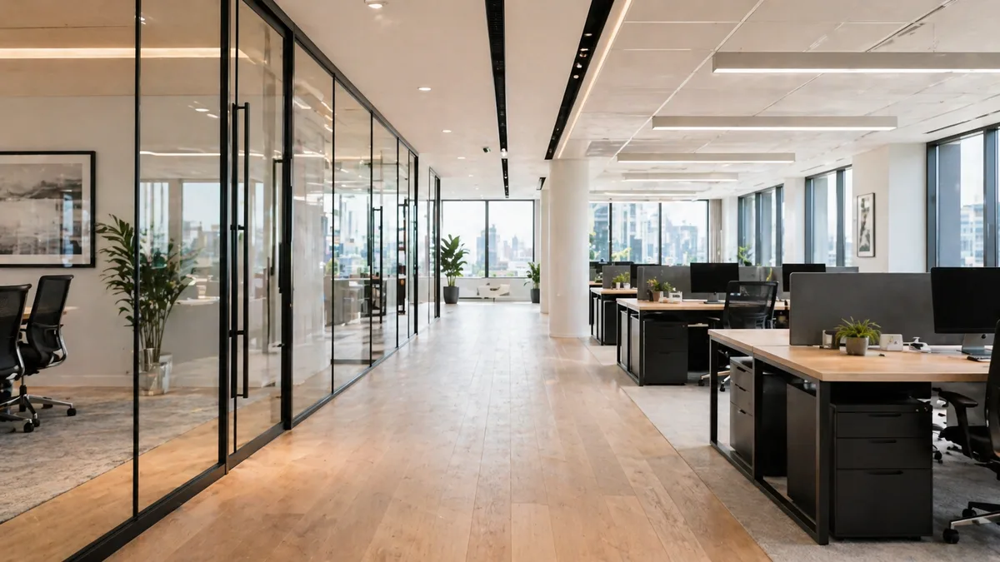

Commercial cleaning needs reliability more than guesswork.
We define scope, access, service windows, and communication before work begins.
COMMERCIAL CLEANING · NORTH NJ
Offices, gyms, clinics, retail, restrooms, high-touch areas, day porter support, night cleaning, and reliable schedules.
Plan this service →Personalized scope · No obligation

THE WORK, EXPLAINED
These are service focus areas, not a universal promise. Exact inclusions depend on the property and your accepted quote.
We define scope, access, service windows, and communication before work begins.
Service windows can match your business operations.
High-use areas get clear, repeatable attention.
Workstations, reception, conference rooms, breakrooms, floors, and trash.
Sinks, counters, toilets, mirrors, fixtures, floors, and restocking expectations.
Shared handles, counters, entry points, and common areas receive repeatable attention.
Recurring plans can define frequency, access, reporting, and timing.
HELP US QUOTE THE RIGHT WORK
THE PURELUX PROJECT GALLERY
Explore original project photos, before-and-after details, and their documented locations in one place.
BEFORE YOU REQUEST
Offices, gyms, retail spaces, clinics, warehouses, and small businesses may be a fit.
Yes. Day porter service can support restrooms, trash, common areas, spills, and presentation.
Yes. Night cleaning is available for businesses that prefer after-hours service.
Yes. We can propose defined scope, frequency, access, and communication standards.
CLEAR SCOPE BEFORE COMMITMENT
Share the details that shape a useful quote. Review your scope and pricing before approving anything.
CONNECTED CARE
A fresh baseline. Care for the details.
EXPLORE SERVICE →A cleaner rhythm. Week after week.
EXPLORE SERVICE →A careful clean. A better handoff.